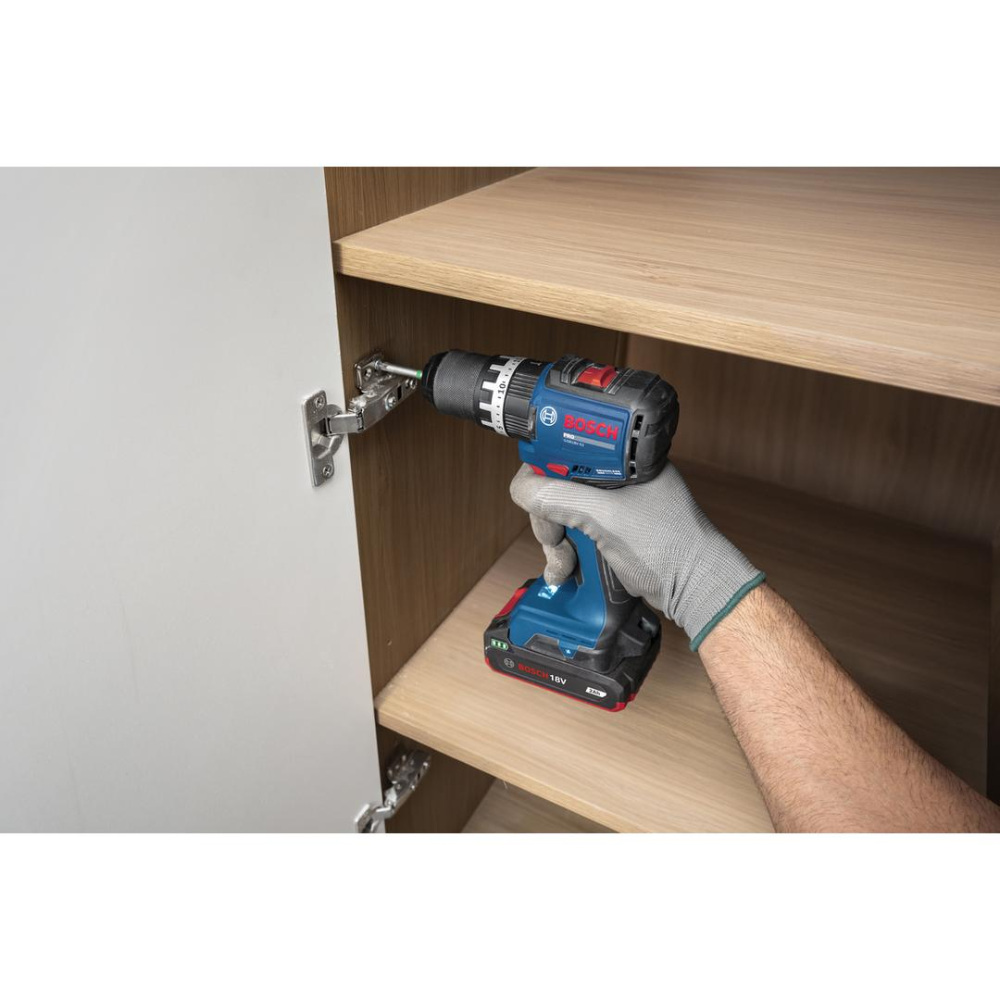
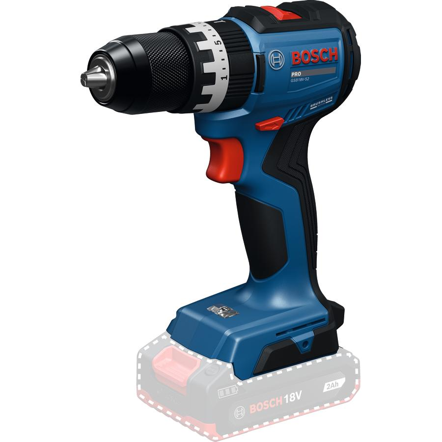
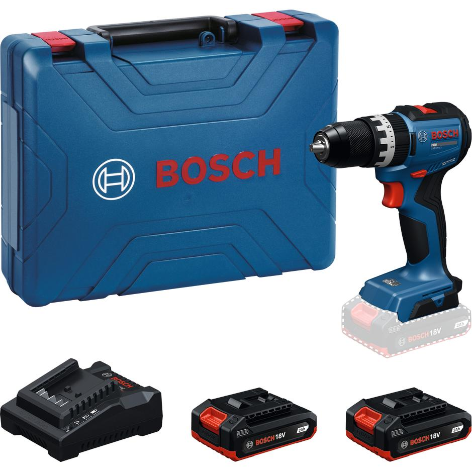
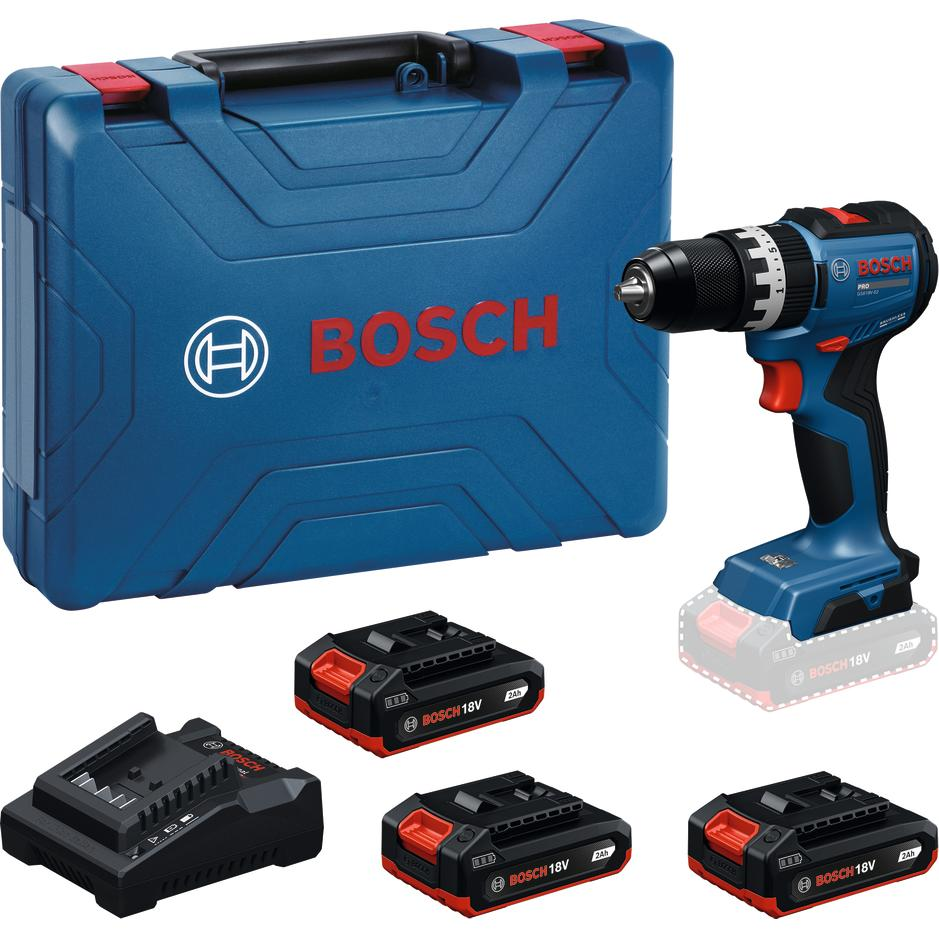
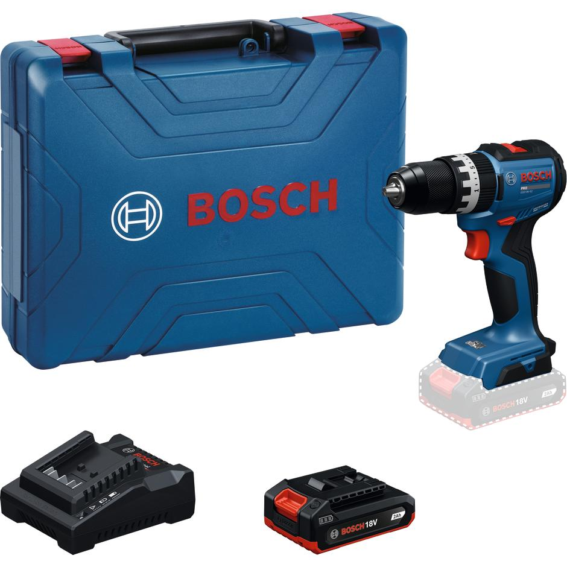
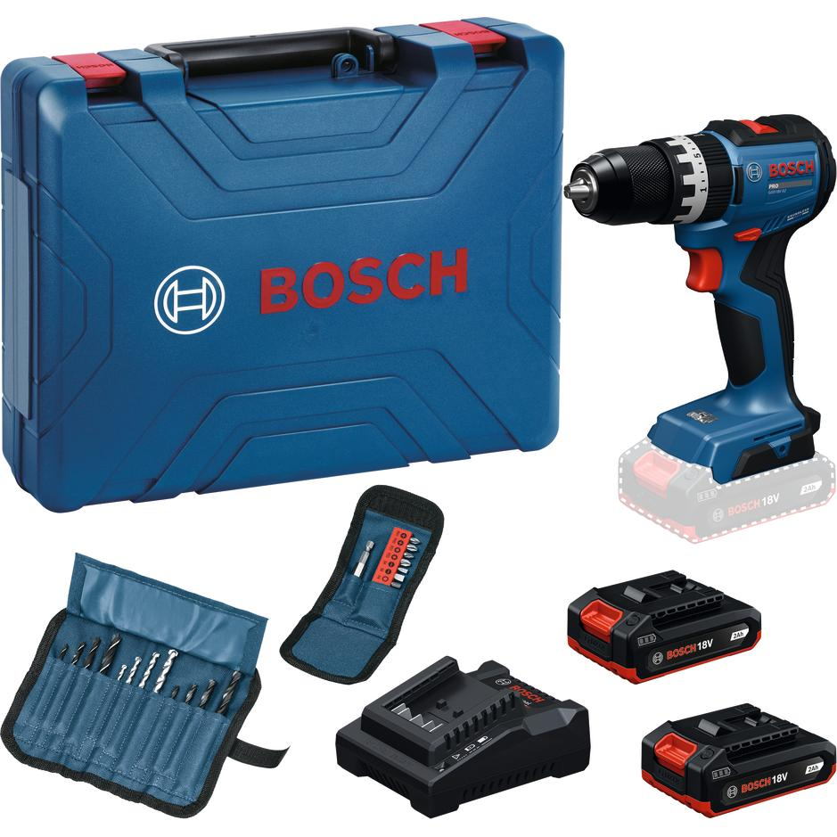
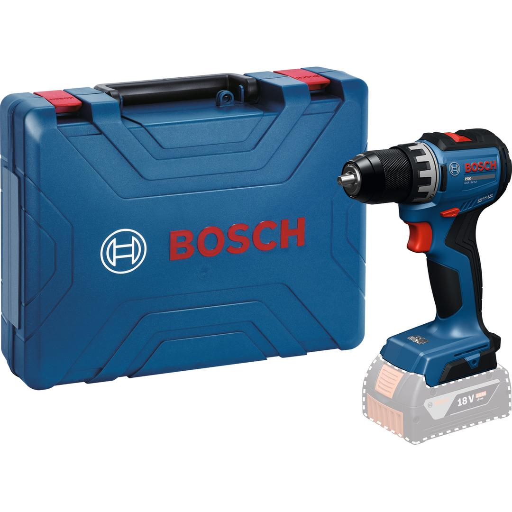

06019S01K5







The GSB18V-52 Professional makes screwdriving and drilling more efficient thanks to its higher soft and hard torque of 25 Nm and 52 Nm respectively. Tight, awkward spaces are no problem with this compact tool’s outstanding head length of only 161 mm. Plus, you get a longer tool lifetime thanks to its brushless motor with less wear and tear. This durable drill driver has a robust metal chuck for high-quality screwdriving and drilling
| Tool dimensions (width) |
56 mm |
| Tool dimensions (length) |
161 mm |
| Tool dimensions (height) |
204 mm |
| Chuck type |
Keyless chuck |
| Battery voltage |
18.0 V |
| Torque (soft/hard/max.) |
25/52/70 Nm |
| Battery type |
Lithium-Ion |
| No-load speed (1st gear / 2nd gear) |
– 500 – 1,900 rpm |
| Chuck capacity, min./max. |
1.5 / 13 mm |
| Weight excl. battery |
0.98 kg |
| Max. screw diameter |
10 mm |
| BITURBO |
No |
| Work light | ✓ |
| Tool design |
Pistol |
Highly compact drill driver for efficient screwdriving
More efficient screwdriving and drilling thanks to higher soft and hard torque of 25 Nm and 52 Nm respectively. Easy work in tight spaces due to compact design with outstanding head length of only 161 mm. Longer tool lifetime thanks to brushless motor. Durable and robust with metal chuck for high quality screwdriving and drilling
The GSB18V-52 Professional is for carpenters, cabinet installers, and electricians